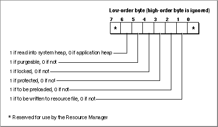

Legacy Document
Important: The information in this document is obsolete and should not be used for new development.
Important: The information in this document is obsolete and should not be used for new development.


The Resource Map
The resource map in the resource fork of a file contains entries for each resource in the resource fork. Each entry lists the resource's resource type, resource ID, name, attributes, and location. When the Resource Manager opens the resource fork of a file, it reads the resource map into memory. The resource map remains in memory until the file is closed.The entries in the resource map on disk give the locations of resources as offsets to
their locations in the resource fork. The entries in the resource map in memory specify the location of resources using handles--a handle whose value isNIL, if the resource is not currently in memory, or a handle to the resource's location in memory.Resource attributes are flags that tell the Resource Manager how to handle the resource. For example, resource attributes specify whether the resource should be read into memory immediately when the Resource Manager opens the resource fork or read
into memory only when needed; whether the resource should be read into the application or system heap; and whether the resource is purgeable.The resource attributes for a resource are described by bits in the low-order byte of an integer value. Figure 1-3 shows which bits correspond to each resource attribute.
Figure 1-3 Resource attributes
 When it first opens a resource fork, the Resource Manager examines the resource attributes for each resource listed in the resource map. If the preloaded attribute of the resource is set, the Resource Manager reads the resource into memory and specifies its location by setting the resource's resource map entry in memory to contain a handle to the resource data. If the preloaded attribute of the resource is not set, the Resource Manager does not read the resource into memory; instead, it specifies the resource's location in the resource map entry in memory with a handle whose value is
NIL.When searching for a resource, the Resource Manager always looks in the resource map in memory, not the resource map of the resource fork on disk. If the resource map in memory specifies a handle for a particular resource, the Resource Manager uses the resource in memory; if the resource map in memory specifies a handle whose value is
NIL, the Resource Manager reads the resource from the resource fork on disk into memory.You can set the system heap attribute of a resource if you want to read a resource into the system heap. In most cases you should not set this attribute. If you do not set the system heap attribute, the Resource Manager reads the resource into relocatable blocks of your application's heap.
The purgeable attribute specifies whether the Resource Manager can purge a resource from memory to make room in memory for other data. If you specify that a resource is purgeable, you need to use the Resource Manager to make sure the resource is still in memory before referring to it through its resource handle.
Some resources must not be purgeable. For example, the Menu Manager expects menu resources to remain in memory, so you should not set the purgeable attribute of a
menu resource. Other resources, such as windows, controls, and dialog boxes, do not have to remain in memory once the corresponding user interface element has been created. You should set the purgeable attribute for these kinds of resources.You can set the locked attribute of a resource if you do not want the resource to be relocatable or purgeable. The locked attribute overrides the purgeable attribute; when the locked attribute is set, the resource is not purgeable, even if the purgeable attribute
is set.
You can set the protected attribute of a resource to ensure that your application doesn't accidentally change the resource ID or name of the resource, modify its contents, or remove the resource from its resource fork. In most cases you do not need to set this attribute. If you do set the protected attribute of a resource, you can still use a Resource Manager routine to change the protected attribute or to set other attributes of the resource.
- Note
- If both the preloaded attribute and the locked attribute are set, the Resource Manager loads the resource as low in the heap as possible.

The changed attribute applies only while the resource map is in memory. You should specify a value of 0 for the bit representing the changed attribute of a resource stored on disk. The Resource Manager sets the changed attribute of a resource's entry in the resource map in memory whenever your application changes a resource using the
ChangedResourceprocedure, changes a resource map entry using theSetResAttrsorSetResInfoprocedure, or adds a resource using theAddResourceprocedure.